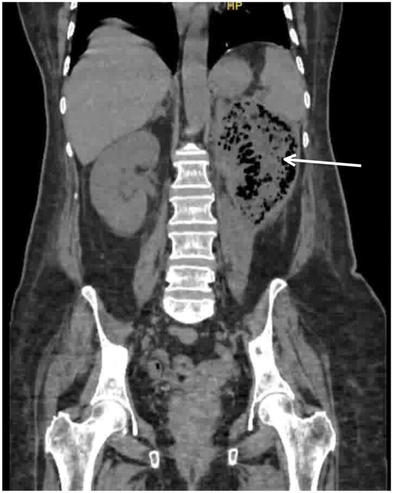

Ficha del catálogo
Pielonefritis enfisematosa
- Sistema
- Urinario
- Modalidad
- TC
- Región
- Riñón
- Dificultad
- Avanzado
Es una infección necrosante del parénquima renal causada por bacterias productoras de gas, casi siempre en pacientes con diabetes mal controlada y con frecuencia asociada a obstrucción de la vía urinaria. Cursa con sepsis grave y su mortalidad depende de la extensión del gas y del estado del parénquima. El reconocimiento precoz cambia el tratamiento porque determina si basta con drenaje y antibióticos o si se requiere nefrectomía.
Técnica
La tomografía sin contraste es la técnica de elección porque detecta cantidades mínimas de gas y define su distribución dentro del parénquima, del sistema colector o del espacio perirrenal. La administración de contraste, cuando la función renal lo permite, valora la perfusión del parénquima y la presencia de necrosis. La radiografía simple puede sugerir el diagnóstico pero es insuficiente.
Qué observar
- Gas dentro del parénquima renal en forma de burbujas o de imágenes lineales radiadas
- Gas en el sistema colector y en el espacio perirrenal
- Extensión del gas más allá de la fascia de Gerota hacia el retroperitoneo
- Áreas de parénquima que no realzan por necrosis
- Cálculo obstructivo o dilatación asociada
- Colecciones líquidas perirrenales y del espacio pararrenal
Hallazgos
La tomografía muestra focos de muy baja atenuación con valores propios del gas que dibujan trayectos radiados siguiendo las pirámides o burbujas dispersas en el parénquima destruido. El gas puede permanecer confinado al riñón o extenderse al espacio perirrenal y al retroperitoneo, hallazgo que se asocia a peor evolución. La afectación bilateral y la ausencia de realce parenquimatoso amplio son signos de gravedad.
Perlas
Conviene separar el gas limitado al sistema colector, que suele deberse a infección de la orina o a manipulación instrumental y tiene mejor pronóstico, del gas que diseca el parénquima, que traduce necrosis tisular verdadera. Esa distinción es la que orienta entre un manejo conservador con drenaje y una cirugía.
Diagnóstico diferencial
- Pielitis enfisematosa
- El gas se limita a la luz del sistema colector y respeta el parénquima, con curso menos agresivo.
- Gas iatrogénico tras sondaje o instrumentación
- Existe antecedente de manipulación reciente, el gas es escaso, intraluminal y el paciente no está séptico.
- Fístula entre intestino y vía urinaria
- Hay gas vesical y engrosamiento intestinal adyacente, con antecedente de diverticulitis o de enfermedad inflamatoria.
- Absceso renal con germen anaerobio
- Predomina la colección organizada con pared que realza y solo alguna burbuja en su interior.
Simuladores
- Artefacto de endurecimiento del haz entre asas intestinales llenas de gas
- Gas intestinal interpuesto en el receso posterior del colon
- Grasa del seno renal con valores bajos de atenuación en ventanas mal ajustadas
Por modalidad
- TC
- Es la referencia porque detecta y localiza con exactitud el gas, valora la necrosis y guía la decisión terapéutica.
- US
- Muestra focos ecogénicos con sombra sucia y reverberación que pueden pasar inadvertidos u ocultar el riñón entero.
Protocolo
Tomografía de abdomen y pelvis sin contraste con cortes finos y ventanas de pulmón para resaltar el gas, seguida de fase nefrográfica con contraste yodado si la situación renal y hemodinámica lo permite. Se revisan reconstrucciones coronales para seguir el trayecto del gas por el retroperitoneo. El informe debe precisar si el gas es intraparenquimatoso, intracavitario o perirrenal.
Clasificación
Se estratifica según la localización y la extensión del gas, separando la afectación limitada al sistema colector, la que compromete el parénquima, la que alcanza el espacio perirrenal y la que se extiende más allá de la fascia de Gerota o es bilateral. Cada escalón se asocia a mayor mortalidad y a mayor probabilidad de precisar nefrectomía.
Errores frecuentes
- Atribuir el gas renal a asas intestinales sin revisar cortes finos y ventanas adecuadas
- No informar la extensión perirrenal y retroperitoneal, que condiciona el tratamiento
- Pasar por alto un cálculo obstructivo asociado que exige drenaje inmediato

pielonefritis enfisematosa gas renal diabetes sepsis necrosis renal retroperitoneo urgencia